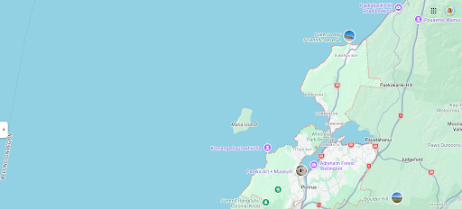
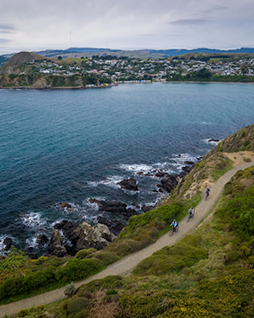
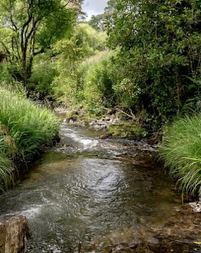
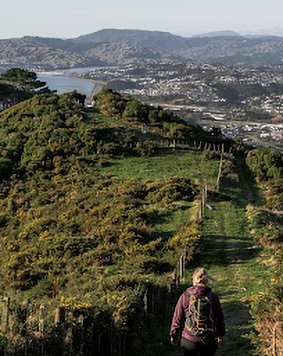
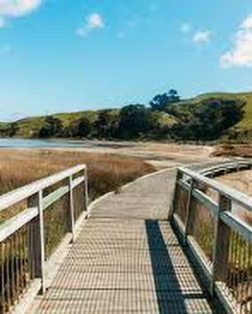
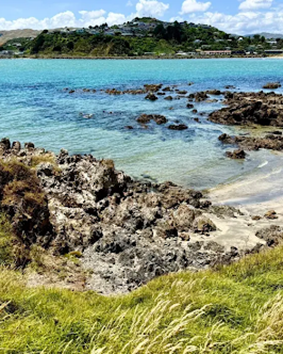

2.7km
Take a stroll through grassy farmland and up to the Battle Hill summit and be rewarded with great views across Pāuatahanui.
Follow the signs detailing the historic 1848 battle between Ngāti Toa Māori and early colonial forces. Further along the trail you’ll see important historical sites and meet grazing sheep and cattle. Complete the loop by returning through the bush reserve.
2km
The Restoration Trail is an easy one-hour walk or ride that will take you through various terrains.
Start by following the farm road through the airstrip, between native wetlands and deer paddocks. Walk up to Gas Line Ridge and take in the scale of the Transmission Gully motorway.
The trail heads south along the top of the ridge beside the deer fence. From there, head right through the horse gate and you’ll drop back down to the airstrip.
Once you’re at the airstrip you can walk south along the stream to see Saint Bernard’s College’s educational woodlot planting. Walkers are allowed to cross the airstrip paddock. On the way back to the car park, use the gate at the southern end to visit the streamside planting area.


1.9km
Seven Pines journeys through lush regenerating native bush in the Tawa-Porirua Basin, up to the top of Rangituhi/Colonial Knob.
Weave your way through Ngā Ara o Rangituhi before emerging on the hilltop with views across the region. The trail is steep and undulating so be prepared for a tough climb.
4.6km
Te Ara Piko runs along the northern edge of Pāuatahanui Inlet, through indigenous salt marshes and wetland habitat. The trail features stretches of boardwalk and bridges, with amazing views of the harbour. The inlet is the perfect spot for bird and wildlife watching.
The flat, gentle gradient is suitable for wheelchairs and buggies, but help may be needed in some places for wheelchair users.
For a longer journey, you can walk past the colourful Camborne boatsheds, and connect up with Camborne Walkway at the western end of the inlet.


4.6km
Whitireia Park, on the western side of Porirua Harbour, provides an easy walking option for families. It’ll take about 1.5 hours to walk through the popular 4.6km loop trail. The well-maintained track offers beaches, meadows, steep trails, wooded areas, and sweeping views of the harbour.
Dogs are welcome, with lead restrictions in certain areas of the park. Whitireia Park Reserve is also popular for fishing off the rocks, exploring rock pools, swimming at Onehunga Bay, and kite surfing.